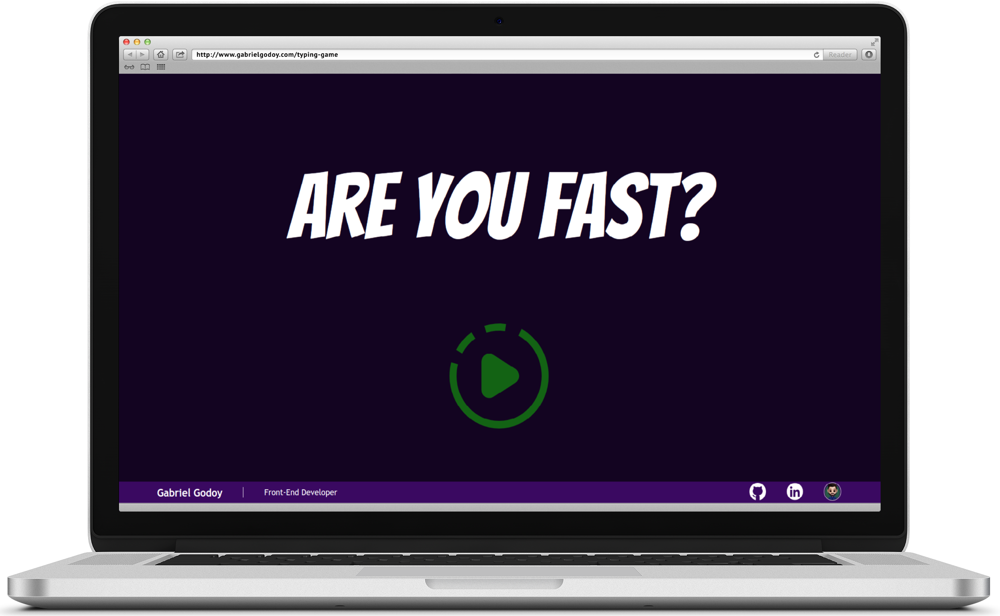
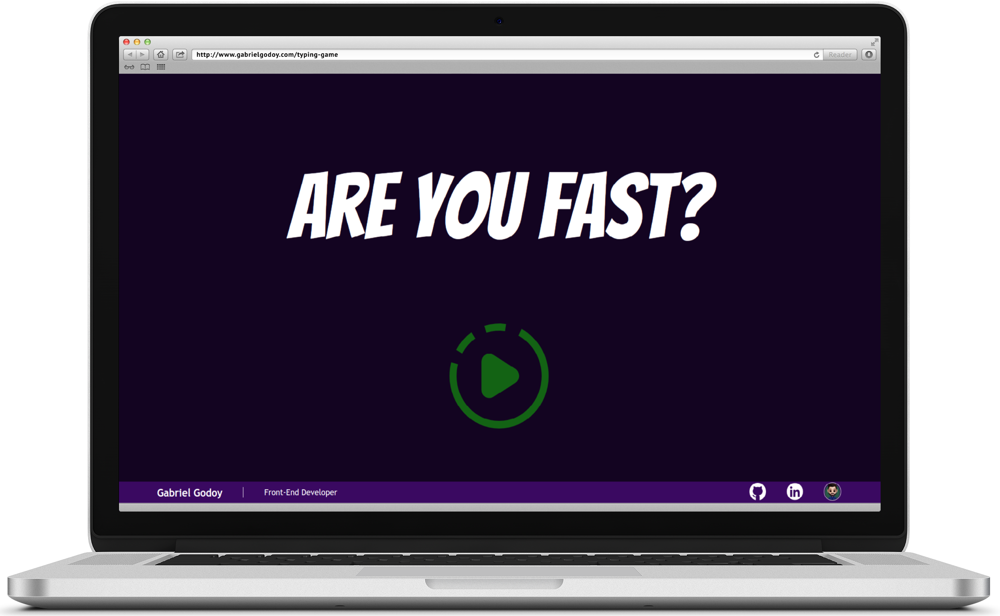

Please, select the language
GABRIEL
GODOY
Amo criar, desenhar e desenvolver belas aplicações e jogos!
front-end developer
HTML - SASS - JavaScript
Quem sou

Quem sou
Sou desenvolvedor Front-end e Web Designer apaixonado pelo que faço. Trabalho com HTML5, CSS3, SASS,
JavaScript, TypeScript e GIT no desenvolvimento web, e também mando bem nas ferramentas de design como
Photoshop, Figma, Illustrator, Canva e Microsoft Designer.
Eu adoro criar soluções incríveis, focando na usabilidade, em layouts estilosos e códigos limpos e
eficientes. Já trabalhei com design responsivo e projetos que envolvem consumo de APIs, que você pode
conferir no meu portfólio.
Curioso por natureza, gosto de aprender coisas novas e sou pró-ativo. Trabalho bem em equipe, falo inglês
fluentemente e estou sempre pronto para viajar ou mudar de cidade, se necessário. Minha experiência como
professor me ajudou a desenvolver habilidades importantes, como senso de urgência e disciplina, me tornando
um profissional pronto para enfrentar desafios e buscar soluções inovadoras.
Ah, e também estou sempre de olho em inteligências artificiais e como elas podem me ajudar a ser ainda mais
eficiente e produtivo no mundo do desenvolvimento e design.
PORTFÓLIO
Websites Responsivos

Insight Business - Website Institucional
Foco no
SEO! Insight Business é uma agência de contabilidade e consultoria financeira e empresarial
que atua exclusivamente online. Nesse projeto, atuei de ponta a ponta, desde o briefing até o design e
implementação. Dada a importância da presença online, foquei na indexação, SEO e assertividade da página
para garantir visibilidade e fácil acesso aos serviços oferecidos.

Sesil Lubrificantes - Catálogo Virtual
Lubrifica! Sesil Lubrificantes é um catálogo
virtual para uma empresa internacional de óleos lubrificantes. Atuei de ponta a ponta no projeto, desde
o briefing até o design e implementação. Utilizei o sistema de CMS da 2RS para desenvolver uma
plataforma eficiente e fácil de navegar, permitindo que os usuários de todo o mundo explorem e encontrem
produtos com facilidade.

Projeto Foco - Landing Page
Diga
Xiis! Projeto Foco é um site beneficente desenvolvido para uma instituição de ensino dedicada
a ensinar fotografia a adolescentes carentes. Utilizando a tecnologia Mobirise, criei uma plataforma
atraente e acessível, destacando o impacto positivo das atividades oferecidas pela instituição.

Mente Magra - Página de Vendas
Mente magra
corpo sadio!Mente Magra é uma landing page de vendas que desenvolvi de ponta a ponta, desde o
briefing com a cliente até o design e implementação. Projetado para redirecionar os usuários para a
página da Hotmart, a plataforma foca na eficiência das vendas. Atualmente, o site encontra-se em
manutenção para melhorias.

Tuttor.tv - Repositório de Vídeos
Aulas em
vídeo! A Tuttor.TV é o repositório de vídeos educativos do Instituto Imondelli, no qual atuei
como designer com foco na experiência mobile. Inspirado pelos principais repositórios de videoaulas,
como a Alura, colaborei na criação de uma plataforma amigável e intuitiva para otimizar a aprendizagem
dos usuários.
Mobile Only

Cardápio Digital
Quer fazer
seu pedido?! Com foco no mercado de bares e restaurantes, desenvolvi este cardápipo virtual
que, por seu layout dinâmico e elegante, além de entregar uma excelente experiência ao usuário, trás
efetividade e vendas mais acertivas para o estabelecimento.

MSN - Messenger
Como seria se
o MSN voltasse? Em parceria com Guilherme Feitosa desenvolvi uma releitura do 'MSN - Messenger',
utilizando HTML, CSS e JavaScript, onde você pode conversar em tempo real com outros usuários
cadastrados.
Games

Ukraine Soldier
Que tal
apoiar a Ucrânia? Desenvolvi esse jogo de plataforma 2D 'free-to-play', baseado no
clássico 'Mario 2D', onde você é um soldado Ucraniano que precisa eliminar os soldados Russos. Ao
finalizar, você receberá um resumo sobre a situação atual da Ucrânia e informações de como pode
ajudar os refugiados, como acesso à doações oficiais.

Jogo da digitação
Você é
rápido digitando? Este é um jogo Web, desenvolvido para desktop, utilizando JavaScript
para me desafiar utilizando loops, DOM e localStorage.

rovani's weed game
Você
consegue ajudar o Rovani a pegar a erva? Este é um jogo baseado em Atari que desenvolvi
usando a biblioteca em tela em JavaScript como presente de aniversário para um amigo querido.
Insight Business - Website Institucional
Foco no SEO! Insight Business é uma agência de contabilidade e consultoria financeira e empresarial que atua exclusivamente online. Nesse projeto, atuei de ponta a ponta, desde o briefing até o design e implementação. Dada a importância da presença online, foquei na indexação, SEO e assertividade da página para garantir visibilidade e fácil acesso aos serviços oferecidos.
Sesil Lubrificantes - Catálogo Virtual
Lubrifica! Sesil Lubrificantes é um catálogo virtual para uma empresa internacional de óleos lubrificantes. Atuei de ponta a ponta no projeto, desde o briefing até o design e implementação. Utilizei o sistema de CMS da 2RS para desenvolver uma plataforma eficiente e fácil de navegar, permitindo que os usuários de todo o mundo explorem e encontrem produtos com facilidade.
Projeto Foco - Landing Page
Diga Xiis! Projeto Foco é um site beneficente desenvolvido para uma instituição de ensino dedicada a ensinar fotografia a adolescentes carentes. Utilizando a tecnologia Mobirise, criei uma plataforma atraente e acessível, destacando o impacto positivo das atividades oferecidas pela instituição.
Mente Magra - Página de Vendas
Mente magra corpo sadio!Mente Magra é uma landing page de vendas que desenvolvi de ponta a ponta, desde o briefing com a cliente até o design e implementação. Projetado para redirecionar os usuários para a página da Hotmart, a plataforma foca na eficiência das vendas. Atualmente, o site encontra-se em manutenção para melhorias.
Tuttor.tv - Repositório de Vídeos
Aulas em vídeo! A Tuttor.TV é o repositório de vídeos educativos do Instituto Imondelli, no qual atuei como designer com foco na experiência mobile. Inspirado pelos principais repositórios de videoaulas, como a Alura, colaborei na criação de uma plataforma amigável e intuitiva para otimizar a aprendizagem dos usuários.
Cardápio Digital
Quer fazer seu pedido?! Com foco no mercado de bares e restaurantes, desenvolvi este cardápipo virtual que, por seu layout dinâmico e elegante, além de entregar uma excelente experiência ao usuário, trás efetividade e vendas mais acertivas para o estabelecimento.
MSN - Messenger
Como seria se o MSN voltasse? Em parceria com Guilherme Feitosa desenvolvi uma releitura do 'MSN - Messenger', utilizando HTML, CSS e JavaScript, onde você pode conversar em tempo real com outros usuários cadastrados.
Games
Ukraine Soldier
Que tal
apoiar a Ucrânia? Desenvolvi esse jogo de plataforma 2D 'free-to-play', baseado no
clássico 'Mario 2D', onde você é um soldado Ucraniano que precisa eliminar os soldados Russos. Ao
finalizar, você receberá um resumo sobre a situação atual da Ucrânia e informações de como pode
ajudar os refugiados, como acesso à doações oficiais.

Jogo da digitação
Você é
rápido digitando? Este é um jogo Web, desenvolvido para desktop, utilizando JavaScript
para me desafiar utilizando loops, DOM e localStorage.
rovani's weed game
Você
consegue ajudar o Rovani a pegar a erva? Este é um jogo baseado em Atari que desenvolvi
usando a biblioteca em tela em JavaScript como presente de aniversário para um amigo querido.
Ukraine Soldier
Que tal apoiar a Ucrânia? Desenvolvi esse jogo de plataforma 2D 'free-to-play', baseado no clássico 'Mario 2D', onde você é um soldado Ucraniano que precisa eliminar os soldados Russos. Ao finalizar, você receberá um resumo sobre a situação atual da Ucrânia e informações de como pode ajudar os refugiados, como acesso à doações oficiais.
Jogo da digitação
Você é rápido digitando? Este é um jogo Web, desenvolvido para desktop, utilizando JavaScript para me desafiar utilizando loops, DOM e localStorage.
rovani's weed game
Você consegue ajudar o Rovani a pegar a erva? Este é um jogo baseado em Atari que desenvolvi usando a biblioteca em tela em JavaScript como presente de aniversário para um amigo querido.
Bora trabalhar junto?!